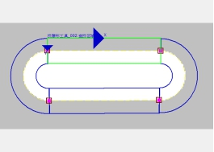
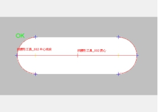

找腰形工具主要是在指定的ROI区域内对实际腰形工件的边缘进行拟合，获取组成腰形边缘的圆弧与线段，一般与定位工具配合使用，根据边缘模式、边缘极性等参数实现高精度的查找。其实际应用效果如图1所示。
 
| 分类 | 参数名称 | 参数描述 |
|---|---|---|
| 属性窗口 | 边缘模式 | 卡尺工具的边缘模式有2种，单边缘和双边缘。 |
| 边缘极性 | 边缘极性是指图像边缘灰度级的过渡形式，分为3种，任意极性、亮到暗和暗到亮。 | |
| 对比度阈值 | 卡尺工具默认只采用对比度评价分数，即按照边缘信号的强度来评分，输出边缘最强的点。对比度阈值的取值范围是0~255。 | |
| 滤波器半宽 | 卡尺工具中涉及到对图像边缘进行滤波操作，滤波器半宽尺寸与图像边缘的锐度有关系。图像边缘的锐度越高，滤波器半宽尺寸可以设置的越小。滤波器半宽尺寸的取值范围为1~∞。 | |
| 探测点偏移 | 是否对探测点进行偏移，开启后显示根据卡尺偏移和偏移距离参数。 | |
| 根据卡尺偏移 | 选择“是”，设置偏移根据卡尺方向，否则根据拟合曲线段方向。 | |
| 偏移距离 | 探测点按照指定的方向偏移一定的距离 | |
| 局外点比例 | 局外点就是偏离曲线较远的点。局外点比例即不参与曲线拟合的点的比例，取值范围是0~1。 | |
| 局外点方法 | 局外点方法分为4种，Combination(全组合)、Ransac(随机抽样)、Robust(权重)和RansacRobust(随机抽样权重)。拟合时间：Combination>RansacRobust>Ransac> Robust。拟合结果的可信度：Combination>RansacRobust> Robust> Ransac。 | |
| 曲线拟合 | 是否根据探测点进行曲线拟合。选择“是”，则进行拟合，并将拟合结果输出到监视窗口的拟合圆弧、拟合线段和拟合线交点等参数。 | |
| 显示拟合圆弧 | 若曲线拟合选择“是”，则该参数选择“是”时，显示拟合结果中的拟合圆弧曲线。 | |
| 显示拟合线段 | 若曲线拟合选择“是”，则该参数选择“是”时，显示拟合结果中的拟合线段。 | |
| 显示拟合线交点 | 若曲线拟合选择“是”，则该参数选择“是”时，显示拟合结果中拟合圆弧和拟合线段的交点。 | |
| 显示中心线段 | 若曲线拟合选择“是”，则该参数选择“是”时，显示拟合结果中的中心线段。 | |
| 显示圆心 | 若曲线拟合选择“是”，则该参数选择“是”时，显示拟合结果中拟合圆弧所在圆的圆心。 | |
| 显示质心 | 选择“是”，则显示卡尺检测到的所有探测点（不包含局外点）的质心。 | |
| 显示探测点 | 选择“是”，显示卡尺的探测点；选择“否”，不显示卡尺的探测点。其中局外点用红色标注，其余用绿色标注。 | |
| 显示偏移前探测点 | 若探测点偏移选择“是”，则该参数选择“是”时，则显示偏移之前的原始探测点。 | |
| 探测点连线 | 选择“是”，则将卡尺检测到的（偏移后的）探测点用线段连接起来。 | |
| 显示外接矩形 | 选择“是”，则显示卡尺检测到的所有（偏移后的）探测点所在的坐标最小外接矩形。 | |
| 图像窗口 | 输入图像 | 显示待检测的图像。 |
| 查找区域 | 图像中参与查找的可变折线矩形区域。 | |
| 数据链 | 输入图像 | 输入图像宽度、高度、像素大小，同图像窗口的输入图像参数。 |
| 二维线性变换 | 目标相对于模板的平移、旋转、缩放变换。 | |
| 高级界面 | 无 | 无 |
| 分类 | 参数名称 | 参数描述 |
|---|---|---|
| 监视窗口 | 输入图像 | 输出图像宽度、高度、像素大小。 |
| 拟合圆弧 | 输出拟合圆弧的圆心、半径、角度。 | |
| 拟合线段 | 输出拟合线段的起始点坐标和终止点坐标。 | |
| 拟合线交点 | 输出拟合圆弧和拟合直线的四个交点坐标。 | |
| 质心 | 输出卡尺检测到的（不包含局外点）探测点的质心所在坐标。 | |
| 圆心 | 输出拟合圆弧的圆心。 | |
| 执行结果 | 工具执行结果。 | |
| 执行时间 | 工具执行时间。 | |
| 图像窗口 | 输入图像 | 显示工具执行结果图像，同监视窗口的输出图像参数。 |
| 拟合圆弧 | 显示图像查找区域内的拟合圆弧结果，同监视窗口的拟合圆弧参数。 | |
| 拟合线段 | 显示图像查找区域内的拟合线段结果，同监视窗口的拟合线段参数。 | |
| 拟合线交点 | 输出拟合圆弧和拟合直线的四个交点坐标，同监视窗口的拟合线交点参数。 | |
| 探测点 | 显示卡尺的探测点。 | |
| 质心 | 显示卡尺的探测点的质心，同监视窗口的质心参数。 | |
| 圆心 | 显示平图像查找区域内的拟合圆弧的圆心，同监视窗口的圆心参数。 | |
| 中心线段 | 显示拟合结果中的中心线段。 | |
| 外接矩形 | 显示卡尺检测到的所有（偏移后的）探测点所在的坐标最小外接矩形。 | |
| 执行结果 | 显示工具执行结果，执行成功显示“OK”，执行失败显示“NG”，同监视窗口的执行结果参数。 | |
| 数据链 | 拟合圆弧 | 同监视窗口参数，供后序工具使用。 |
| 拟合线段 | 同监视窗口参数，供后序工具使用。 | |
| 拟合线交点 | 同监视窗口参数，供后序工具使用。 | |
| 质心 | 同监视窗口参数，供后序工具使用。 | |
| 圆心 | 同监视窗口参数，供后序工具使用。 |
无
无
参见“\Samples\找腰形工具.gvp”。